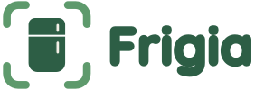
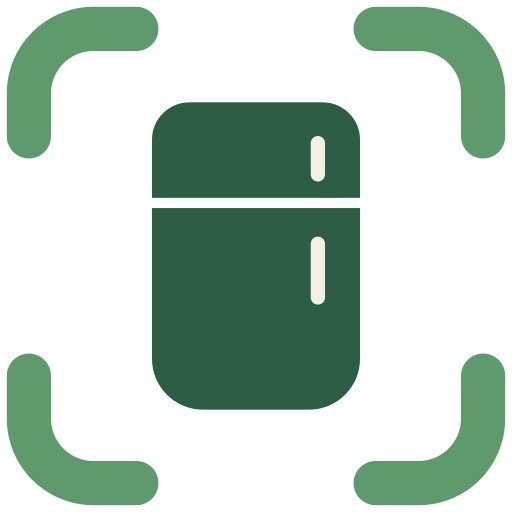
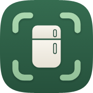
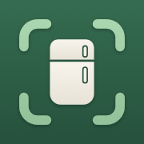
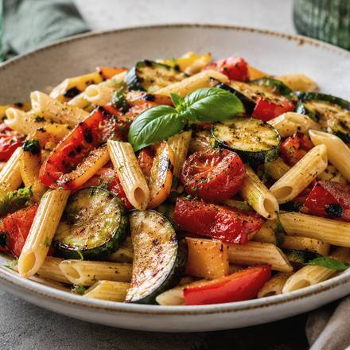

La base du nouveau design, mise à jour avec tout ce qu'on a changé depuis la première version : le vert sauge, les titres en serif, le doré réservé à Plus et le logo final. Ces valeurs sont celles du prototype V3 et de design/tokens.css.

Choisi le 6 octobre. Le nom est en Quicksand épaissie, déjà vectorisé dans les SVG. Tous les fichiers sont dans design/logo/.

frigia-logo.svgfrigia-logo-inverse.svg
frigia-symbole.svg

icon-192/512 · faviconLe vert du logo n'est pas encore aligné. Le logo utilise #2D5E45 avec une menthe #9FCCA4, un peu plus froid que la sauge foncé #34503B de l'app. Côte à côte sur l'écran d'ouverture, ça passe. On pourra régénérer les fichiers en sauge si tu préfères.
--bg #F5EFE3Fond des écrans--card #FBF7EFCartes, feuilles--surface #ECE4D4Blocs secondaires, puces--line #E0D6C3Séparateurs, contours--sage #527659Boutons, onglet actif--sage-deep #34503BBandeaux, titres forts--sage-soft #DCE5D5Badges, encadrés d'info--on #F7F1E6Texte posé sur la sauge--text #1F2A22Texte principal--muted #66705FTemps, aides, légendes--page #EFE3D0Derrière l'app sur grand écran--hi #E0A44APlus, badges, étincelles--hi-soft #F6E5C6Fond des encarts Plus--danger #9A3B26Se déconnecter, supprimer--danger-soft #F3E1D9Fond des boutons à risqueÉcart entre blocs : 12 à 14. Marge des écrans : 20. Pas d'ombre sur les cartes ; seule la barre d'onglets flotte avec une ombre verte.
Sauge pour l'action principale, une seule par écran. Doré uniquement pour Plus.
Écran d'ouverture, inscription, bienvenue dans Plus.

Icônes au trait 1,75, toutes de la même famille. Le scan reste toujours au centre.